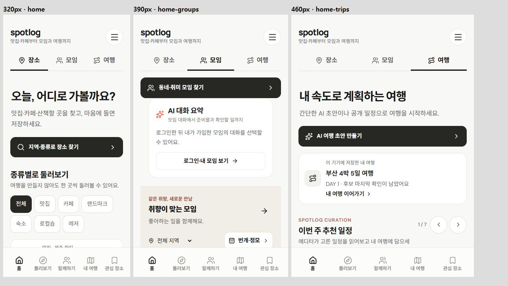

2026.10.29 · 로컬 검수 · Git 업로드·배포 없음
장소 홈 · 모임 홈 · 여행 홈 · 메모리 전용 요약 흐름
| 확인된 문제 | 반영 |
|---|---|
| 세 개 진입 버튼 아래에 모임 홍보·여행 추천·장소를 한꺼번에 표시 | 홈 안을 장소/모임/여행 탭으로 나눔. 선택한 콘텐츠만 표시하며 기존 하단 5개 메뉴 유지. |
| 여행 카드가 4.6초/5.2초마다 자동 이동 | 홈 자동 타이머 제거. 직접 누르는 44px 이전·다음과 스와이프만 유지. 노출 기간·권리 철회 갱신은 유지. |
| 요약 진입이 채팅 내부 ‘대화 정리’에만 있고 실제 요청은 미연결 오류 | 홈 모임 탭에서 가입한 채팅 선택, 모임·정모 상세에서 AI 대화 요약 직접 열기. 실제 AI 연결 전 상태와 예시 확인 구분. |
| 요약 예시가 특정 여행 대화 5개에만 연결 | 기존 전체방·일반 취미 모임의 예시 원문도 연결. 고정 ID와 본문이 모두 맞는 경우만 표시. 고객 대화를 임의 요약하거나 예시로 대체하지 않음. |
| 상세에서 돌아오면 필터·카드가 바뀌거나 열려 있는 요약의 접근 권한이 남음 | 홈 탭·세로 위치·선택 카드 ID·모임 지역 보존. 권한을 잃으면 요약 표시를 즉시 차단하고 닫음. |
현재는 실제 LLM 미연결임. 범위·특정인 선택, 예시 결과, 근거 원문 이동, 선택한 준비 항목 추가·공지/투표 초안 편집을 확인하는 프런트 흐름임. 실제 메시지 분석·실시간 전송·서버 저장 완료를 뜻하지 않음. 예약·일정·읽음·참석·담당자를 자동 변경하지 않음.

수정 전 소스와 빌드·검사 로그는 artifacts/home-topics-20261029에 보관. 사용자 자료 초기화·실제 AI/외부 서비스 실행·Git 업로드 없음.